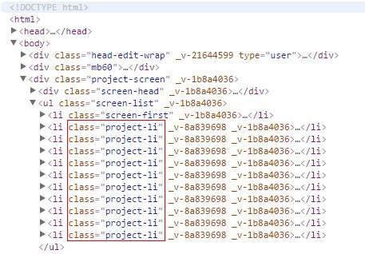
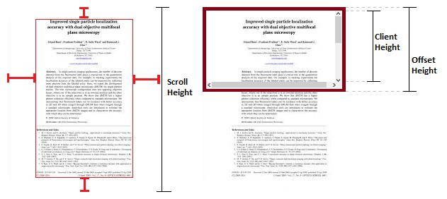

手把手教你写网络爬虫（5）：PhantomJS实战
原文出处： 拓海
大家好！从今天开始，我要与大家一起打造一个属于我们自己的分布式爬虫平台，同时也会对涉及到的技术进行详细介绍。大家如果有什么好的想法请多留言，多提意见，一起来完善我们的爬虫平台。在正式介绍平台之前，先用一些篇幅对基础篇做一点补充。模拟滚动
这次的目标是爬一个众筹网站的所有项目，项目列表页如下：https://www.kaistart.com/project/more.html。打开后进行分析，页面显示出10个项目：

如果想看到更多项目，并不能像网易云音乐那样点“下一页”翻页，而是需要向下拉滚动条或者向下滚动鼠标滚轮来触发异步请求。爬虫该如何应对这种情况呢？我们可以使用selenium的api执行js代码将屏幕内容滚动到指定位置。
下面这段代码会一直向下滚动项目页，一直到滚不动为止：
1 2 3 4 5 6 7 8 | # 一直滚动到最底部 js1 = 'return document.body.scrollHeight' js2 = 'window.scrollTo(0, document.body.scrollHeight)' old_scroll_height = 0 while browser.execute_script(js1) >= old_scroll_height: old_scroll_height = browser.execute_script(js1) browser.execute_script(js2) time.sleep(1) |
scrollTo() 方法可把内容滚动到指定的坐标:
参数 | 描述 |
xpos | 必需。要在窗口文档显示区左上角显示的文档的 x 坐标。 |
ypos | 必需。要在窗口文档显示区左上角显示的文档的 y 坐标。 |
这里用到了scrollHeight，它和ClientHeight还有OffsetHeight有什么区别呢？

offsetHeight： 包括内容可见部分的高度，border，可见的padding，水平方向的scrollbar（如果存在）；不包括margin。
clientHeight： 包括内容可见部分的高度，可见的padding；不包括border，水平方向的scrollbar，margin。
scrollHeight： 包括内容的高度（可见与不可见），padding（可见与不可见）；不包括border，margin。
Chrome
代码写好了，接下来就用selenium+phantomJs大法实验一下！滚到底后把项目列表提取出来看一下：

1 2 3 4 5 6 7 8 9 10 11 12 13 14 15 16 17 | browser = webdriver.PhantomJs() url = 'https://www.kaistart.com/project/more.html' try: browser.get(url) wait = ui.WebDriverWait(browser, 20) wait.until(lambda dr: dr.find_element_by_class_name('project-detail').is_displayed()) # 一直滚动到最底部 js1 = 'return document.body.scrollHeight' js2 = 'window.scrollTo(0, document.body.scrollHeight)' old_scroll_height = 0 while browser.execute_script(js1) >= old_scroll_height: old_scroll_height = browser.execute_script(js1) browser.execute_script(js2) time.sleep(1) sel = Selector(text=browser.page_source) proj_list = sel.xpath('//li[@class="project-li"]') |
程序运行结束后，显示proje_list里面只有25个元素，而我们自己手动滚的话却有100多个，明显有bug。想定位这个问题很简单，截图即可，看看为什么停在第25个项目。对，phantomJs虽然没有图形界面，但是可以截图。

1 | browser.save_screenshot(debug.png') |
这样就会把图片保存在项目目录，打开看看：

发现项目页只能显示一行，这说明网页不兼容phantomJs，这倒不是什么新鲜事，换一个浏览器试试呗。第一期介绍过，selenium是支持所有主流浏览器的。比如换成Chrome，只需改一行代码：

1 | browser = webdriver.Chrome() |
再次运行程序，不出所料，Chrome浏览器弹出来，不仅能够正确显示页面，还一直在滚动：
项目全都刷出来了，想爬什么就爬吧！什么？你问我在Linux服务器上怎么爬？纯命令行的那种吗？
虚拟X Server
PhantomJs是无界面浏览器，可以在Linux服务器上正常运行，但Chrome会在调用GUI接口时报错。既然Linux服务器没有图形接口服务，也就是X Server，我们就要虚拟出来一个，才能让Chrome正常运行。于是找到了Xvfb（X virtual frame buffer）,它可以用来作为完整X服务程序的替代。Xvfb有一个Python的封装叫PyVirtualDisplay，我们就用它来解决这个问题。
安装：
pip install pyvirtualdisplay
用法：

1 2 3 4 5 6 7 8 9 10 | from selenium import webdriver from pyvirtualdisplay import Display display = Display(visible=0, size=(800, 600)) display.start() driver = webdriver.Chrome() driver.get("http://www.baidu.com") print (driver.page_source.encode('utf-8')) driver.quit() display.stop() |
运行程序后打印出了baidu的页面内容，现在可以完美运行Chrome了。需要补充的是，在Linux上运行Chrome需要额外安装一个ChromeDriver，比较简单，就不详细介绍了。
分布式系统
既然我们要打造自己的分布式爬虫平台，就要先知道什么是分布式系统，百度百科是这样定义的：
分布式系统（distributed system）是建立在网络之上的软件系统。正是因为软件的特性，所以分布式系统具有高度的内聚性和透明性。因此，网络和分布式系统之间的区别更多的在于高层软件（特别是操作系统），而不是硬件。内聚性是指每一个数据库分布节点高度自治，有本地的数据库管理系统。透明性是指每一个数据库分布节点对用户的应用来说都是透明的，看不出是本地还是远程。在分布式数据库系统中，用户感觉不到数据是分布的，即用户不须知道关系是否分割、有无副本、数据存于哪个站点以及事务在哪个站点上执行等。
这个定义不太好理解，看看书上怎么说。《分布式系统概念与设计》一书中对分布式系统做了如下定义：
分布式系统是一个硬件或软件组件分布在不同的网络计算机上，彼此之间仅仅通过消息传递进行通信和协调的系统。
《分布式系统原理和范型》一书中是这样定义分布式系统的：
分布式系统是若干独立计算机的集合，这些计算机对于用户来说就像是单个相关系统。
简单来说就是一群独立计算机集合共同对外提供服务，但是对于系统的用户来说，就像是一台计算机在提供服务一样。分布式意味着可以采用更多的普通计算机（相对于昂贵的大型机）组成分布式集群对外提供服务。计算机越多，CPU、内存、存储资源等也就越多，能够处理的并发访问量也就越大。
从分布式系统的概念中我们知道，各个主机之间通信和协调主要通过网络进行，所以，分布式系统中的计算机在空间上几乎没有任何限制，这些计算机可能被放在不同的机柜上，也可能被部署在不同的机房中，还可能在不同的城市中，对于大型的网站甚至可能分布在不同的国家。但是，无论空间上如何分布，一个标准的分布式系统应该具有以下几个主要特征：
透明性
系统资源被所有计算机共享。每台计算机的用户不仅可以使用本机的资源，还可以使用本分布式系统中其他计算机的资源。
同一性
系统中的若干台计算机可以互相协作来完成一个共同的任务，或者说一个程序可以分布在几台计算机上并行地运行。
通信性
系统中的计算机都可以通过通信来交换信息。
下一步
今天先了解下基本概念，热热身。整个系统的架构及流程留到下次一起奉上。下期再见！
1 赞 4 收藏 1 评论